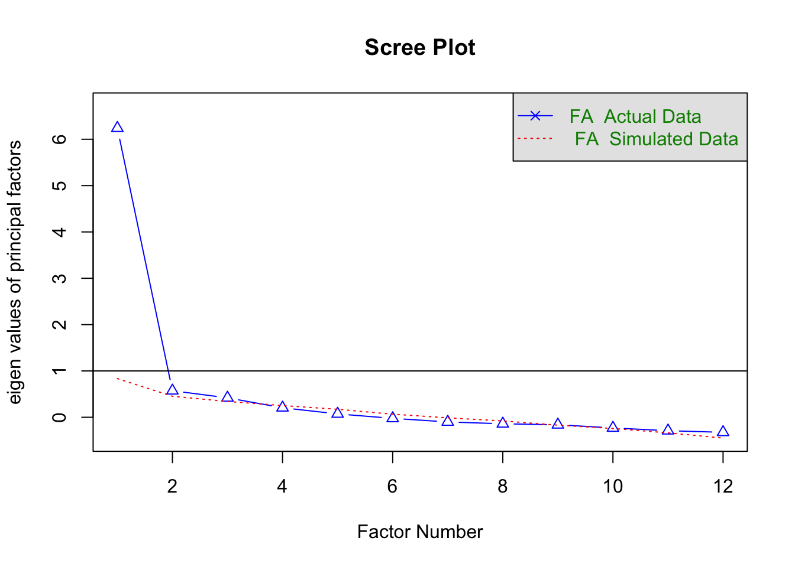

Análisis Factorial Exploratorio

FACULTAD DE CIENCIAS SOCIALES - PUCP
Curso: POL 304 - Estadística para el análisis político 2 | Semestre 2024 - 1
Jefas de Práctica: Karina Alcántara 👩🏫 y Lizette Crispín 👩🏫
El Análisis Factorial Exploratorio (AFE) es una técnica
estadística que permite explorar con mayor precisión las dimensiones
subyacentes, constructos o variables latentes de las variables
observadas, es decir, las que observa y mide el investigador.
Hacemos analisis factorial para reducir las variables en otras variables resumen. Es decir, queremos saber si las nuevas variables tienen un nombre, al cual se le denomina técnicamente variable latente. En esta sesión exploraremos la data a ver qué emerge.
Tema de la clase
Vamos a ver si podemos crear una variable latente de confianza en las instituciones (del P1$01 (col 11) al P1$31 (col 31)).
Vamos a tomar 11 variables observables de la base de datos de enaho, que es justo la batería de preguntas que les mostré en el cuestionario.
Preparamos las variables
Confianza en las instituciones
PASO 1: Calcular la matriz de correlación
Tenemos diferentes maneras de crear la matriz de correlación.
Al tener una variable que mide confianza desde nada a mucha confianza, la denominamos como ordinal, y por lo tanto,tendremos que ejecutar la correlación policórica.
#install.packages("polycor")
library(polycor)
library(psych)
poly_cor <- polychoric(confianza)
poly_cor## Call: polychoric(x = confianza)
## Polychoric correlations
## JNE ONPE RENIE Mn.Pr Mn.Ds PNP FFAA Gb.Rg P.Jdc MINED Df.Pb
## JNE 1.00
## ONPE 0.85 1.00
## RENIEC 0.55 0.61 1.00
## Mun.Prov 0.52 0.53 0.44 1.00
## Mun.Dist 0.49 0.49 0.41 0.86 1.00
## PNP 0.47 0.50 0.46 0.54 0.55 1.00
## FFAA 0.43 0.46 0.52 0.42 0.42 0.68 1.00
## Gob.Reg 0.51 0.52 0.40 0.66 0.64 0.58 0.51 1.00
## P.Judicial 0.51 0.52 0.42 0.57 0.56 0.59 0.50 0.70 1.00
## MINEDU 0.43 0.46 0.52 0.45 0.45 0.51 0.49 0.50 0.57 1.00
## Def.Pueblo 0.47 0.49 0.47 0.47 0.46 0.51 0.51 0.53 0.59 0.56 1.00
## Congreso 0.43 0.45 0.33 0.53 0.52 0.48 0.40 0.60 0.60 0.43 0.56
## [1] 1.00
##
## with tau of
## 1 2 3
## JNE -0.403 0.940 1.8
## ONPE -0.488 0.792 1.8
## RENIEC -1.082 -0.048 1.1
## Mun.Prov -0.147 1.088 2.0
## Mun.Dist -0.176 1.059 2.0
## PNP -0.418 0.770 1.7
## FFAA -0.704 0.317 1.3
## Gob.Reg -0.061 1.173 2.1
## P.Judicial -0.123 1.056 1.9
## MINEDU -0.911 0.323 1.4
## Def.Pueblo -0.502 0.715 1.7
## Congreso 0.350 1.477 2.2Creamos un objeto con la matriz de correlaciones
PASO 2: Verificando que los datos se puedan factorizar
❗ La prueba de KMO nos permite determinar si se puede factorizar o no.
Lo que hace es eliminar la influencia o la información que realmente no aporta en la relación con las variables observables, para así ver la correlación real, a este proceso se le denomina correlación parcial.
Lo que buscamos es que la correlación parcial sea mayor a 0.5
Se solicita un valor de al menos 0.5, a partir del 0.8 ya es excelente.
## Kaiser-Meyer-Olkin factor adequacy
## Call: psych::KMO(r = confianza)
## Overall MSA = 0.9
## MSA for each item =
## JNE ONPE RENIEC Mun.Prov Mun.Dist PNP FFAA
## 0.84 0.84 0.92 0.84 0.84 0.92 0.90
## Gob.Reg P.Judicial MINEDU Def.Pueblo Congreso
## 0.94 0.93 0.94 0.95 0.95Lo que tenemos que ver es el overall MSA, este valor de preferencia tiene que ser mayor a 0.5, queremos que salga más cercano a 1.
PASO 3: Verificar si la matriz de correlaciones es adecuada
Verificar si la matriz de correlaciones es adecuada.
- Test de Bartlett:
Otro manera de poder determinar si podemos realizar o no el análisis factorial, es mediante el test de bartlett, que nos permite indicar si la matriz de correlaciones que henmos obsrvado en el primer paso se parece o no a una matriz de identidad.
- Que es la matriz de identidad?
Es una matriz donde solo se cuenta con los valores de 1 en la diagonal y en los demás valores es 0, es decir, que la unica correlación existente es entre las mismas variables.
Entonces, lo que esperamos es que la matriz de correlación sea diferente a la matriz de identidad, para concluir que sí hay correlación.
cortest.bartlett(corMatrix,n=nrow(confianza))$p.value>0.05#Menor a 0.05 saldrá FALSE, mayor a 0.05 saldra TRUE## [1] FALSEEste es una prueba de hipótesis donde H0: La matriz de correlacion es una matriz identidad
Entonces buscamos que se rechace la hipótesis nula para así poder determinar que la matriz de correlación no se prece una matriz de identidad
PASO 4: Determinar cuántos factores o variables latentes puede redimensionar la data
Luego de haber determinado si podemos realizar el análisis factorial, pasaremos al paso de calcular el número de factores o de variables latentes podemos obtener.
Esto lo podemos ver con 2 maneras,
➡️ Opción 1: Gráfico de sedimentación
Mediante el gráfico de sedimentación. En este gráfico lo que veremos es en donde se presenta la mayor caída para determinar el número de factores.
Donde está el codo las X’s que están encima de la línea roja

## Parallel analysis suggests that the number of factors = 3 and the number of components = NAEl eje X vendría a ser lo factores que se podrían dividir y el eje Y son los autovalores
➡️ Opción 2: Eigen values - Autovalores
Los autovalores que superan 1 son los factores que podríamos realizar.
## [1] 5.7243559 1.1305763 0.9707585 0.7816106 0.6636440 0.5535846 0.5075943
## [8] 0.4647083 0.4033080 0.3622893 0.2257831 0.2117871PASO 5: Solicitamos el número de componentes.
Aplicamos la redimensión
En esta parte, aplicamos los componentes principales.
#install.packages("GPArotation")
library(GPArotation)
factorial <- fa(confianza,nfactors= 3 ,rotate = "varimax",fm="minres")
factorial## Factor Analysis using method = minres
## Call: fa(r = confianza, nfactors = 3, rotate = "varimax", fm = "minres")
## Standardized loadings (pattern matrix) based upon correlation matrix
## MR1 MR3 MR2 h2 u2 com
## JNE 0.27 0.24 0.73 0.67 0.33 1.5
## ONPE 0.27 0.21 0.87 0.87 0.13 1.3
## RENIEC 0.45 0.13 0.44 0.41 0.59 2.2
## Mun.Prov 0.25 0.82 0.23 0.78 0.22 1.4
## Mun.Dist 0.27 0.79 0.19 0.73 0.27 1.4
## PNP 0.61 0.29 0.21 0.50 0.50 1.7
## FFAA 0.63 0.14 0.23 0.47 0.53 1.4
## Gob.Reg 0.51 0.49 0.19 0.53 0.47 2.3
## P.Judicial 0.59 0.37 0.20 0.52 0.48 2.0
## MINEDU 0.58 0.19 0.23 0.43 0.57 1.6
## Def.Pueblo 0.59 0.23 0.23 0.46 0.54 1.6
## Congreso 0.43 0.36 0.15 0.34 0.66 2.2
##
## MR1 MR3 MR2
## SS loadings 2.74 2.11 1.88
## Proportion Var 0.23 0.18 0.16
## Cumulative Var 0.23 0.40 0.56
## Proportion Explained 0.41 0.31 0.28
## Cumulative Proportion 0.41 0.72 1.00
##
## Mean item complexity = 1.7
## Test of the hypothesis that 3 factors are sufficient.
##
## The degrees of freedom for the null model are 66 and the objective function was 5.82 with Chi Square of 65402.32
## The degrees of freedom for the model are 33 and the objective function was 0.25
##
## The root mean square of the residuals (RMSR) is 0.03
## The df corrected root mean square of the residuals is 0.05
##
## The harmonic number of observations is 11247 with the empirical chi square 1614.08 with prob < 7.200019e-319
## The total number of observations was 11247 with Likelihood Chi Square = 2841.41 with prob < 0
##
## Tucker Lewis Index of factoring reliability = 0.914
## RMSEA index = 0.087 and the 90 % confidence intervals are 0.084 0.09
## BIC = 2533.59
## Fit based upon off diagonal values = 0.99
## Measures of factor score adequacy
## MR1 MR3 MR2
## Correlation of (regression) scores with factors 0.85 0.89 0.92
## Multiple R square of scores with factors 0.72 0.80 0.84
## Minimum correlation of possible factor scores 0.45 0.59 0.68Diagramamos 📊
¿Que variables componen cada uno de mis factores?
##
## Loadings:
## MR1 MR3 MR2
## JNE 0.734
## ONPE 0.867
## RENIEC 0.445 0.436
## Mun.Prov 0.816
## Mun.Dist 0.789
## PNP 0.614
## FFAA 0.630
## Gob.Reg 0.506 0.489
## P.Judicial 0.589 0.372
## MINEDU 0.577
## Def.Pueblo 0.592
## Congreso 0.434 0.357
##
## MR1 MR3 MR2
## SS loadings 2.735 2.107 1.875
## Proportion Var 0.228 0.176 0.156
## Cumulative Var 0.228 0.403 0.5601.Ver qué variables tiene cada componente
2.Ver la carga, que tanto aporta cada variable al componente.
3.Proportion Var y Cumulative Var
PASO 6: Evaluamos el Análisis Factorial Exploratorio solicitado
- ¿Qué variables aportaron mas a los factores?
## Congreso RENIEC MINEDU Def.Pueblo FFAA PNP P.Judicial
## 0.3372837 0.4050627 0.4263242 0.4553069 0.4697649 0.5048577 0.5242361
## Gob.Reg JNE Mun.Dist Mun.Prov ONPE
## 0.5317924 0.6714731 0.7339215 0.7837958 0.8732249- ¿Qué variables contribuyen a mas de un factor?
## ONPE Mun.Prov Mun.Dist FFAA JNE MINEDU Def.Pueblo
## 1.329693 1.365548 1.366792 1.372612 1.505626 1.571662 1.611192
## PNP P.Judicial RENIEC Congreso Gob.Reg
## 1.687324 1.951096 2.164629 2.187600 2.273543- ¿Qué variables tiene un componente “único” más grande?
## ONPE Mun.Prov Mun.Dist JNE Gob.Reg P.Judicial PNP
## 0.1267751 0.2162042 0.2660785 0.3285269 0.4682076 0.4757639 0.4951423
## FFAA Def.Pueblo MINEDU RENIEC Congreso
## 0.5302351 0.5446931 0.5736758 0.5949373 0.6627163Que tanto componente unico entre las variales, tiene menor cantidad de información en común (o sea varianza común)
PASO 7: Guardamos los componentes como nuevas variables
Podemos crear un data set con sólo los factores creados
## MR1 MR3 MR2
## 1 -0.015398132 1.9326401 -1.53684777
## 2 -0.045220205 0.5055937 -0.07725491
## 3 0.343817132 0.3219684 -0.04101534
## 4 -0.003566532 -0.9198334 -0.98524495
## 5 -1.050240319 0.1812582 1.69585781
## 7 0.987795750 0.2139105 1.07321242## MR1 MR3 MR2
## Min. :-2.63272 Min. :-1.983424 Min. :-2.5800
## 1st Qu.:-0.60080 1st Qu.:-0.723521 1st Qu.:-0.8837
## Median :-0.06942 Median :-0.008546 Median :-0.0122
## Mean : 0.00000 Mean : 0.000000 Mean : 0.0000
## 3rd Qu.: 0.54671 3rd Qu.: 0.513798 3rd Qu.: 0.4524
## Max. : 4.07026 Max. : 3.554010 Max. : 3.3607Agregamos a la subdata
confianza$pod_estado<- factorial_casos$MR1
confianza$org_elect<- factorial_casos$MR2
confianza$municipios<- factorial_casos$MR3- Primer factor:Poderes del Estado
- Segundo factor: Organismos electorales (confins2)
- Tercer factor:municipios
PASO 8: Estandarizamos a una escala de 100
#install.packages("BBmisc")
library(BBmisc)
confianza$confins1 <- normalize(confianza$pod_estado,
method = "range",
margin=2, # by column
range = c(0, 100))
confianza$confins2 <-normalize(confianza$org_elect,
method = "range",
margin=2, # by column
range = c(0, 100))
confianza$confins3 <-normalize(confianza$municipios,
method = "range",
margin=2, # by column
range = c(0, 100))Vemos resultados de cada factor
## JNE ONPE RENIEC Mun.Prov Mun.Dist
## Min. :1.000 Min. :1.000 Min. :1.000 Min. :1.000 Min. :1.00
## 1st Qu.:1.000 1st Qu.:1.000 1st Qu.:2.000 1st Qu.:1.000 1st Qu.:1.00
## Median :2.000 Median :2.000 Median :3.000 Median :2.000 Median :2.00
## Mean :1.862 Mean :1.938 Mean :2.505 Mean :1.721 Mean :1.74
## 3rd Qu.:2.000 3rd Qu.:2.000 3rd Qu.:3.000 3rd Qu.:2.000 3rd Qu.:2.00
## Max. :4.000 Max. :4.000 Max. :4.000 Max. :4.000 Max. :4.00
## PNP FFAA Gob.Reg P.Judicial
## Min. :1.000 Min. :1.000 Min. :1.000 Min. :1.000
## 1st Qu.:1.000 1st Qu.:2.000 1st Qu.:1.000 1st Qu.:1.000
## Median :2.000 Median :2.000 Median :2.000 Median :2.000
## Mean :1.927 Mean :2.234 Mean :1.664 Mean :1.722
## 3rd Qu.:2.000 3rd Qu.:3.000 3rd Qu.:2.000 3rd Qu.:2.000
## Max. :4.000 Max. :4.000 Max. :4.000 Max. :4.000
## MINEDU Def.Pueblo Congreso pod_estado
## Min. :1.000 Min. :1.000 Min. :1.000 Min. :-2.63272
## 1st Qu.:2.000 1st Qu.:1.000 1st Qu.:1.000 1st Qu.:-0.60080
## Median :2.000 Median :2.000 Median :1.000 Median :-0.06942
## Mean :2.271 Mean :1.979 Mean :1.449 Mean : 0.00000
## 3rd Qu.:3.000 3rd Qu.:2.000 3rd Qu.:2.000 3rd Qu.: 0.54671
## Max. :4.000 Max. :4.000 Max. :4.000 Max. : 4.07026
## org_elect municipios confins1 confins2
## Min. :-2.5800 Min. :-1.983424 Min. : 0.00 Min. : 0.00
## 1st Qu.:-0.8837 1st Qu.:-0.723521 1st Qu.: 30.31 1st Qu.: 28.55
## Median :-0.0122 Median :-0.008546 Median : 38.24 Median : 43.22
## Mean : 0.0000 Mean : 0.000000 Mean : 39.28 Mean : 43.43
## 3rd Qu.: 0.4524 3rd Qu.: 0.513798 3rd Qu.: 47.43 3rd Qu.: 51.04
## Max. : 3.3607 Max. : 3.554010 Max. :100.00 Max. :100.00
## confins3
## Min. : 0.00
## 1st Qu.: 22.75
## Median : 35.66
## Mean : 35.82
## 3rd Qu.: 45.10
## Max. :100.00